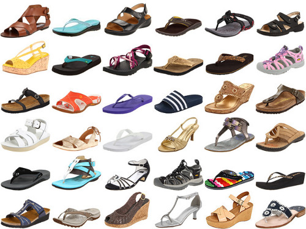
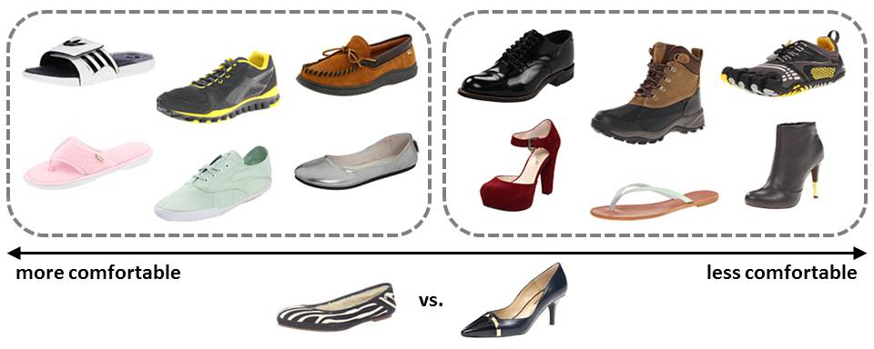

{kind=link}


UT Zappos50K |
| Shoes | Sandals | Slippers | Boots |
|
 | |
|
We employed a crowd-sourcing strategy to obtain pairwise labels for the dataset. When presented with a pair of images and an attribute, each worker must make a relative decision (more, less, equal) and report the confidence of his decision (high, mid, low). We repeated the same comparison for 5 unique workers in order to vote on the final label.
Before workers were allowed to work on our Human Intelligence Tasks (HITs), they must first complete a simple qualification test to learn about the visual attributes. We designed an image spectrum for each attribute to demonstrate its visual meaning.
|  |
The first stage of our tasks contained all 3,000 image pairs. We asked the workers to compare 10 pairs of unique images with respect to all 4 attributes (12,000 labels total). There were a total of 40 questions per HIT and we paid the workers 15 cents per HIT. The average completion time for these HITs was 5 minutes. The second stage of our tasks contained 4,612 fine-grained image pairs. Since these tasks were significantly more challenging, we asked the workers to compare 12 pairs of images with respect to only 1 attribute per pair. There were 12 questions per HIT and we paid the workers 18 cents per HIT. The average completion time for these HITs was 7 minutes.
⇦ Go Back
{kind=link}
{kind=link}
{kind=link}
{kind=link}